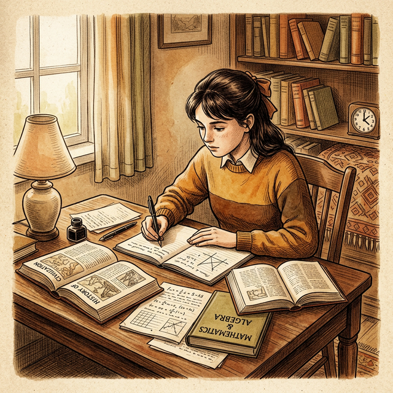

How to Prepare for Exams Without Stress
By Priya Patel | Published: February 3, 2025 | 📖 10 min read | 💬 31 Comments

📋 Table of Contents
Exam season is one of the most stressful periods in a student's life. The pressure to perform well, the fear of failure, and the sheer volume of material to cover can feel overwhelming. But here's the truth: exam stress is largely a result of poor preparation and time management, not the exams themselves. With the right approach, you can walk into any exam feeling confident, calm, and prepared.
In this comprehensive guide, we'll share proven strategies that top-performing students use to prepare for exams without burning out. These techniques have been tested by thousands of students across India and have consistently delivered excellent results.
Why Students Feel Stressed During Exams
Understanding the root causes of exam stress is the first step toward managing it. Research shows that exam anxiety stems from several common factors:
- Procrastination: Waiting until the last minute to start studying creates unnecessary pressure and panic.
- Lack of preparation: Not having a clear study plan makes the workload seem more daunting than it actually is.
- Fear of failure: Worrying about results instead of focusing on the process of learning.
- Comparison with others: Constantly comparing your progress with classmates can increase anxiety.
- Poor health habits: Skipping meals, not sleeping enough, and not exercising weaken your body and mind.
The good news is that all of these factors are within your control. By addressing each one systematically, you can dramatically reduce your exam stress and improve your performance.
Start Early: The 30-Day Preparation Plan
The single most effective way to reduce exam stress is to start preparing early. Ideally, you should begin your focused exam preparation at least 30 days before the exam. This gives you enough time to cover all the material, revise thoroughly, and practice with past papers.
Here's a suggested 30-day plan that has worked for thousands of students:
- Days 1-10: Complete your first reading of all chapters. Focus on understanding concepts, not memorizing.
- Days 11-20: Make summary notes and flash cards. Practice numerical problems and short-answer questions.
- Days 21-25: Solve at least 5-10 previous year question papers under timed conditions.
- Days 26-28: Quick revision using your summary notes. Focus on weak areas identified from practice papers.
- Days 29-30: Light revision only. Relax, eat well, sleep well, and build confidence.
"By failing to prepare, you are preparing to fail." — Benjamin Franklin
Create a Realistic Study Timetable
A common mistake students make is creating overly ambitious timetables that are impossible to follow. If your timetable requires you to study 14 hours a day with no breaks, you will burn out within the first week. Instead, create a realistic timetable that accounts for meals, breaks, exercise, and leisure time.
A good rule of thumb is to study for 6-8 hours per day during exam preparation, divided into 45-minute study sessions with 10-15 minute breaks. Alternate between subjects to prevent monotony, and always start with the most challenging subject when your energy is highest.
Remember to leave one day per week completely free from studying. This rest day allows your brain to process and consolidate the information you've learned during the week. Many students find that they actually remember more after taking a day off.
Use Past Papers Effectively
Practicing with previous year question papers is one of the most important steps in exam preparation. Past papers give you insights into the exam pattern, marking scheme, types of questions asked, and the topics that are most frequently tested. Studies show that students who practice with at least 5 past papers score significantly higher than those who don't.
- Practice under exam conditions — set a timer and avoid looking at notes
- After completing a paper, mark it yourself using the answer key
- Identify patterns — which topics appear most frequently?
- Focus your revision on topics where you lost marks
- Practice at least one paper per subject per week
Healthy Habits During Exam Season
Your physical health has a direct impact on your mental performance. During exam season, many students neglect basic health habits, which actually hurts their performance. Here are the key habits to maintain:
- Sleep: Get at least 7-8 hours of sleep every night. Never sacrifice sleep for extra study time.
- Nutrition: Eat balanced meals with plenty of fruits, vegetables, and protein. Avoid excessive caffeine and junk food.
- Exercise: Even a 20-minute walk each day can reduce stress and improve concentration.
- Hydration: Drink at least 8 glasses of water daily. Dehydration impairs cognitive function.
- Relaxation: Practice deep breathing, meditation, or listen to calming music for 10 minutes daily.
Managing Exam Day Anxiety
Even well-prepared students can feel nervous on exam day. Here are some techniques to manage anxiety in the exam hall:
Take 5 deep breaths before opening your question paper. Read through the entire paper once before starting to write. Begin with the questions you're most confident about — this builds momentum and calms your nerves. Don't watch others in the exam hall; focus only on your own paper. If you get stuck on a question, move on and come back to it later.
Post-Exam Recovery Tips
After each exam, avoid discussing answers with friends, as this often increases anxiety. Instead, take a short break, clear your mind, and then shift your focus to preparing for the next exam. Once all exams are over, give yourself a complete break to recharge before the next academic cycle begins.
✅ Final Checklist
- Start preparation at least 30 days before exams
- Create a realistic timetable with breaks
- Practice with at least 5 previous year papers
- Maintain healthy sleep, diet, and exercise habits
- Use deep breathing techniques for exam day anxiety